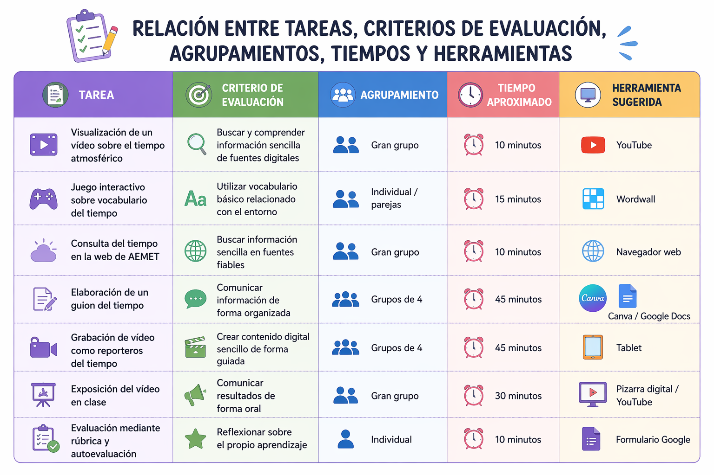

Texto
Guía didáctica
Este Recurso Educativo Abierto (REA) está diseñado para alumnado de 3.º de Educación Primaria y tiene como finalidad trabajar el tiempo atmosférico a través de una situación de aprendizaje basada en metodologías activas.
El proyecto “Reporteros del tiempo” permite al alumnado investigar, organizar información y comunicarla mediante la creación de un informativo meteorológico, desarrollando así la competencia digital, la expresión oral y el trabajo en equipo.
Texto
Objetivos
- Comprender los elementos básicos del tiempo atmosférico.
- Desarrollar habilidades de búsqueda y selección de información.
- Mejorar la expresión oral y escrita.
- Fomentar el trabajo cooperativo.
- Utilizar herramientas digitales de forma responsable.
Texto
Metodología
La propuesta se basa en el Aprendizaje Basado en Proyectos (ABP), favoreciendo un aprendizaje activo y significativo.
El alumnado trabaja de forma cooperativa, investiga información, elabora materiales y crea un producto final, desarrollando así competencias clave.
Se incorporan herramientas digitales que facilitan el aprendizaje y permiten al alumnado interactuar con los contenidos.
Texto
Atención a la diversidad (DUA)
La situación de aprendizaje se adapta a las necesidades del alumnado mediante diferentes formas de presentación de la información (vídeos, imágenes, texto), distintas opciones de expresión (oral, escrita, digital) y diversas formas de participación.
Esto permite atender a la diversidad del aula y facilitar el aprendizaje de todo el alumnado.
Texto
Fuente: Elaboración propia.

Texto
Desarrollo de actividades con herramientas digitales
A continuación se detallan algunas de las actividades propuestas, incluyendo ejemplos concretos de uso de las herramientas digitales sugeridas:
Visualización de vídeo (YouTube)
El alumnado visualizará un vídeo introductorio sobre el tiempo atmosférico para comprender conceptos básicos como temperatura, lluvia o viento.
Ejemplo:
https://www.youtube.com/watch?v=iyAzacuXURA&feature=youtu.be
Juego interactivo (Wordwall)
Se realizará una actividad interactiva para trabajar el vocabulario relacionado con el tiempo.
Ejemplo:
https://wordwall.net/es-es/community/el-tiempo-atmosf%C3%A9rico
Consulta del tiempo (AEMET)
El alumnado accederá a la web de AEMET para observar el tiempo real de su localidad.
https://www.aemet.es
Elaboración del guion (Canva / Google Docs)
Los grupos crearán su guion utilizando plantillas digitales para organizar la información del informativo.
Grabación del vídeo (Tablet)
El alumnado grabará su propio informativo del tiempo utilizando dispositivos del aula.
Exposición final (Pizarra digital / YouTube)
Los vídeos serán proyectados en clase para su visualización y evaluación conjunta.
Evaluación (Formulario Google)
El alumnado completará una autoevaluación mediante un formulario digital y una diana de autoevaluación.